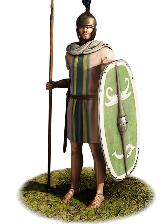
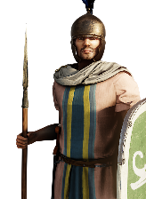
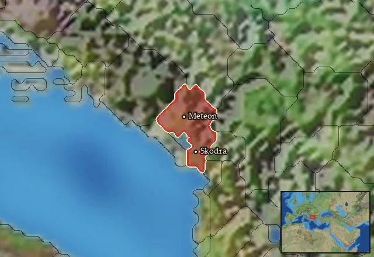

RTR: Imperium Surrectum
RTR: Imperium SurrectumLabeataean Thureophoroi


Class: spearmen · Category: infantry · Men per unit: 40
Reforms: Unlocked by Military innovations have arrived!, Labeataean Thureophoroi Reform
Description
Labeataean Thureophoroi might appear to be fairly light infantry due to eschewing armour for a shortened Illyrian tunic and cloak. However, they are surprisingly rugged close-quarters fighters, capable of a strong charge and sufficiently disciplined for well-ordered formations. These men wear bronze Celto-Illyrian helmets as well as a thick thureos shield to provide some defence when needed, and strike their enemies with javelins or spears. They are a multipurpose medium infantry unit and surprisingly reliable in melee.
Historical background
Skerdilaidas was the first king of the Labeataean Kingdom, having wrestled it from the Ardiaeans after their monarch, Demetrios of Pharos, was defeated by the Romans. Skerdilaidas was a native Labeataean who had previously served as a general to the Ardiaeans under Queen Teuta and, afterwards, King Demetrios (Sasel Kos, From Agron to Genthius. Large Scale Piracy in the Adriatic (2002), p. 147). His alignment with Rome did not come out of the blue, in fact it was a continuation of earlier pro-Roman policy in Illyria. This originated with the Ardiaeian ruler Pinnes and was confirmed when he allied with the Romans against Macedon. This would turn out to be of great advantage for the Labeataeans, as the Romans forced the Macedonians to return territories that had been lost to Philip V at the end of the first Macedonian War in 205 BC (Dzino, Illyricum in Roman Politics, 229 BC–AD 68 (2010), p. 54). Skerdilaidas’ invasion against Macedon motivated by Philip’s withholding tribute had started well for the Labeataean Kingdom, but soured when the Macedonians successfully counter-invaded. Skerdilaidas died on a high with the restoration of his territories with the Treaty of Pharos. Shortly afterwards, his son Pleuratos III, the next Labeataean king, continued his pro-Roman policy. At the end of the second Macedonian war (200–198 BC), and following the Roman victory, the Labeataean Kingdom would be awarded more Macedonian territory. Livy (Liv. 33 34) notes part of the terms of this treaty: “Lychnis and Parthus were given to Pleuratus; both these Illyrian cities had been subject to Philip”. This meant the Pleuratos was awarded both Lychnidus and the Parthini as additional prizes, along with their own lost territory (Dzino (2010), p. 55).
However, Pleuratos’ son Genthios, “the last Illyrian king”, would change course. He ended up in an alliance with Rome’s enemy Perseus of Macedon, likely in order to expand his influence and kingdom at the cost of the many smaller Illyrian allies of Rome. The Histri snitched on both of these matters to Rome, saying that Genthios was “ravaging their borders and asserted that he and Perseus were living on the most perfect understanding with each other and were planning war with Rome” (Liv. 42 26). Unfortunately for the Illyrian Kingdom and Genthios, this was the misstep that doomed them. At the time, he had already built up an army of 15,000 men and 270 ships at Lissos and attacked Roman allies in Illyria. He must have been very pleased with himself at this point, as he had already minted coins with his own face on one side and a Labeataean lemboi (a small Illyrian style galley ship with a single row of oars) on the reverse side (Wilkes, The Illyrians (1996), p. 179).
The Roman response was decisive. Many of the Illyrians Genthios had raided were now reinforced by the Romans, who sent “2,000 men to occupy the forts of the Dassaretii and the Illyrians, as the people themselves were asking for troops to hold them” (Liv. 42 36) against the Macedonians – and probably against the Labeataeans, too. His campaign against Rome failed, and after just 20 or 30 days, he surrendered. As Livy (Liv. 45 3) confirms: “Gentius [was] taken prisoner, and Illyria had made formal submission to Rome”. Genthios and his family were imprisoned, his fleet of lemboi confiscated, and his realm partitioned. This war marked the end of independent rulership in southern Illyria, although the name of the Labeatae would live on as a separate identity well into the early Roman period (Wilkes (1996), p. 99).
As for the Labeataean Thureophoroi themselves, there is some interesting historical backing for them as a unit in RIS. The main evidence comes from some belt mounts, essentially a fancy form of belt buckle, which is engraved with some sort of art or annotations. In this case, one was found in graves at a necropolis at Velje Ledine, Gostilj, Montenegro, which shows Illyrian retainers or possibly Celtic mercenaries with long thureos shields, Montefortino helmets, and spears or javelins (Dzino, Contesting Identities of pre-Roman Illyricum (2012), pp. 85-6). The helmets themselves are interesting, as they both come with and without cheek guards, while the long oval shape of the shield is distinctively the Celtic thureos style that had become so widespread in use thanks to La Tene cultural influence. This combination of items may seem familiar to the reader, as this is indeed what this unit is armed with. It also should be noted that they lack armour, this is also something very common for most Illyrian units in RIS, as they generally just wore a shortened tunic. It might be tempting to think that the combination of javelins, spears, and no armour except helmets and shields would mean that these men are primarily skirmishers. However, Polybius (Plb. 2.3) contests this idea, and shows that the Illyrians were perfectly capable of fighting as organised shock infantry “whose numbers and close order gave them irresistible weight, served to dislodge the light-armed troops, and forced the cavalry who were on the ground with them to retire to the hoplites”.
Stats
| Rank in roster | Rank in roster | Rank in roster | Rank in roster | ||||||||
|---|---|---|---|---|---|---|---|---|---|---|---|
| Men per unit | 40 | ███······· 28% | Attack | 14 | ███████··· 72% | Charge bonus | 11 | ████······ 39% | Defence | 41 | ████████·· 77% |
| · armour | 3 | ██········ 22% | · defence skill | 33 | ██████████ 97% | · shield | 5 | ██████···· 58% | Morale | 12 | ██████···· 58% |
| Discipline | normal | Training | untrained | Recruitment cost | 1,849 dn | ████······ 41% | Upkeep per turn | 677 dn | ██████···· 61% | ||
| Turns to recruit | 3 |
Weapons
| Primary | Secondary | Primary | Secondary | Primary | Secondary | Primary | Secondary | ||||
|---|---|---|---|---|---|---|---|---|---|---|---|
| Attack | 14 | 12 | Charge bonus | 11 | 14 | Type | thrown · blade | melee · blade | Damage | piercing | piercing |
| Projectile | javelin | — | Range | 50 | — | Ammunition | 2 | — | Attributes | prec | light_spear · spear_bonus_8 |
| Min delay between blows | 25 | 25 |
Defence
| Primary | Secondary | Primary | Secondary | Primary | Secondary | Primary | Secondary | ||||
|---|---|---|---|---|---|---|---|---|---|---|---|
| Total | 41 | — | Armour | 3 | — | Defence skill | 33 | — | Shield | 5 | — |
| Material | flesh | — |
Condition, terrain and upkeep
| Hit points | 1 · mount 6 | Ground: scrub / sand / forest / snow | 0 / 0 / -1 / 0 | Heat penalty | 0 | Charge distance | 30 |
| Fire delay | 0 | Food consumed (low / high) | 60 / 300 | Mass per man | 0.95 | Formation: close / loose | 1 x 1.2 / 2 x 2.4 · 5 ranks · square |
| Men per unit | 40 as the unit file states — the game multiplies this by your unit size |
In battle: Can hide in long grass · Can sap · Very good stamina
The full attribute list (5)
sea_faring, hide_forest, hide_long_grass, can_sap, very_hardy
Who can recruit it
A core roster unit for one faction, which can raise it anywhere it holds the right building:
Any faction holding one of the provinces below can field it.
Exactly what a settlement must have, route by route (5)
| Building | Also requires | Building | Also requires | Building | Also requires | Building | Also requires |
|---|---|---|---|---|---|---|---|
| Region Information Scroll | Tier 2 Military Industrial Complex · Military innovations have arrived! · Labeataean area of recruitment · Any Government (Dependency, Indirect Rule or Direct Rule) | Tier 2 Colony not built | Indirect Rule | Tier 2 Military Industrial Complex · Labeataean Thureophoroi Reform · Tier 1 Colony | Direct Rule | Tier 2 Military Industrial Complex · Labeataean Thureophoroi Reform · Tier 1 Colony | Homeland | Tier 2 Military Industrial Complex · Labeataean Thureophoroi Reform |
| Region Information Scroll | Tier 2 Military Industrial Complex · Military innovations have arrived! · Labeataean area of recruitment · Dependency or Indirect Rule | Tier 1 Colony not built |
Areas of recruitment

| Zone | Provinces | ||||||
|---|---|---|---|---|---|---|---|
| Labeataean | 2 |